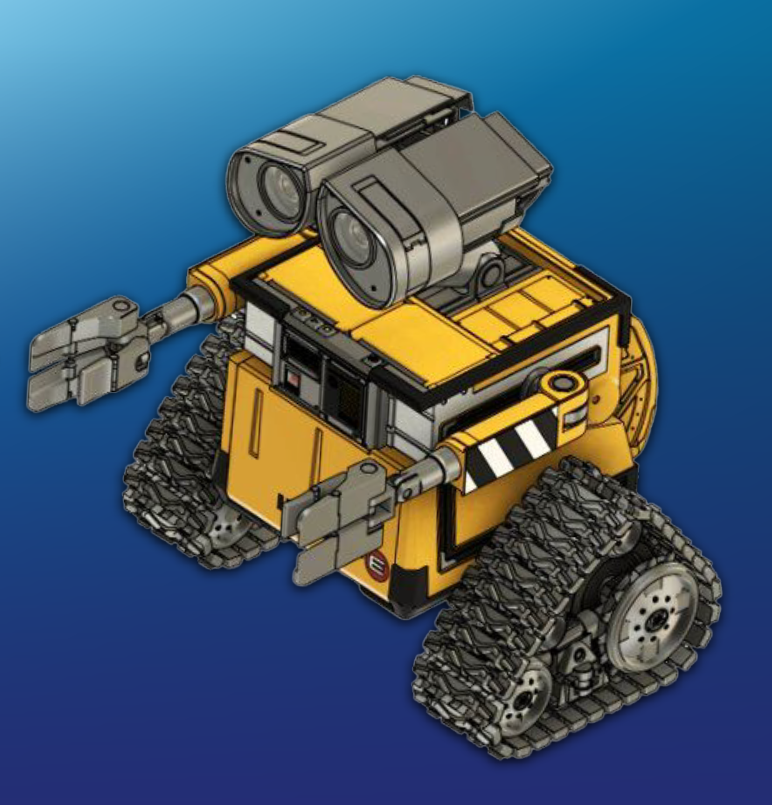
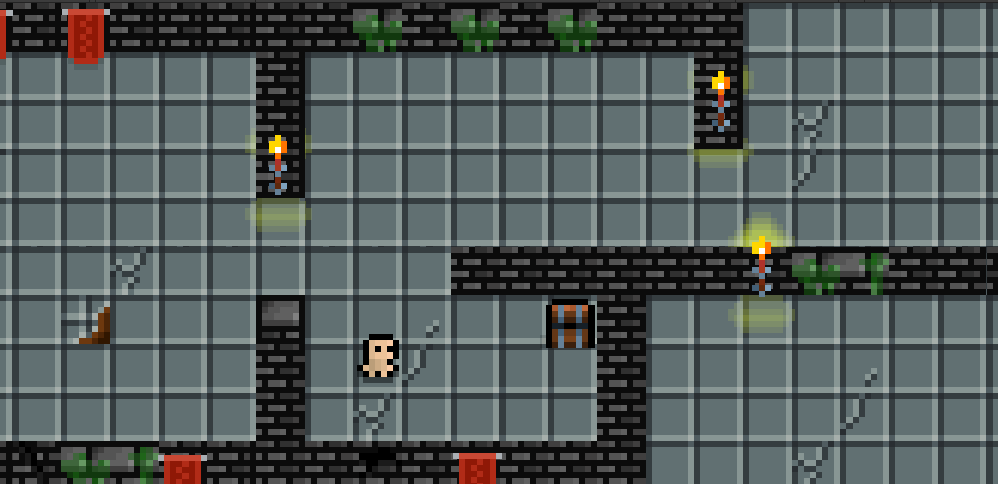

⌞ Hello, I'm Katelin Huynh! ⌝
Electrical Engineering and Computer Science Student
Welcome to my digital portfolio! I'm passionate about software development, game development, and engineering! I enjoy exploring new technologies and using several hardware and software aspects to bring my creative projects to life!
View My Resume!⤷ About Meˎˊ˗
Hi! I'm an Electrical Engineering student with a passion for turning creative ideas into real-world projects. I enjoy exploring the connection between software and hardware, whether that means developing interactive games, experimenting with electronics, or finding new ways to make technology more engaging!
One of my current projects involves collaborating with fellow members of the IEEE club to develop a WALL-E-inspired robot. This project gives me the opportunity to explore robotics, apply engineering concepts, and strengthen my teamwork and problem-solving skills while bringing an iconic character to life.
I'm always looking for different opportunities to expand my skills, collaborate with other peers, and challenge myself with something new! My goal is to continue growing as a developer and engineer while making my creative projects both functional and meaningful!
⊹Technical Skills ࣪ ˖
Programming & Software
- Python
- C#
- HTML & CSS
- Unity Game Development
Electrical & Hardware
- Sensor Integration
- Circuit Wiring
- Motor & Power Systems
- Electronics Prototyping
Development Tools
- Git & GitHub
- Visual Studio Code
- PyCharm
- Unity Editor
⌞Featured Projects⌝

IEEE WALL-E Robotics Project
In Progress
Collaborating with the IEEE Electrical Team to develop a WALL-E-inspired robot. My focus includes sensors, general wiring, and motor and power systems.

2D Dungeon Game
Developed a 2D dungeon game using Unity and C#, featuring player movement, collectibles, enemies, and interactive gameplay.
View on GitHub → Play Dungeon Escape →NFC Digital Portfolio
Developing an electronic NFC portfolio that allows users to access my resume, projects, and contact digitally by tapping their smartphones against an NFC device.
๋࣭ ⭑Connect With Meˎˊ˗
Interested in my work? Feel free to connect with me!